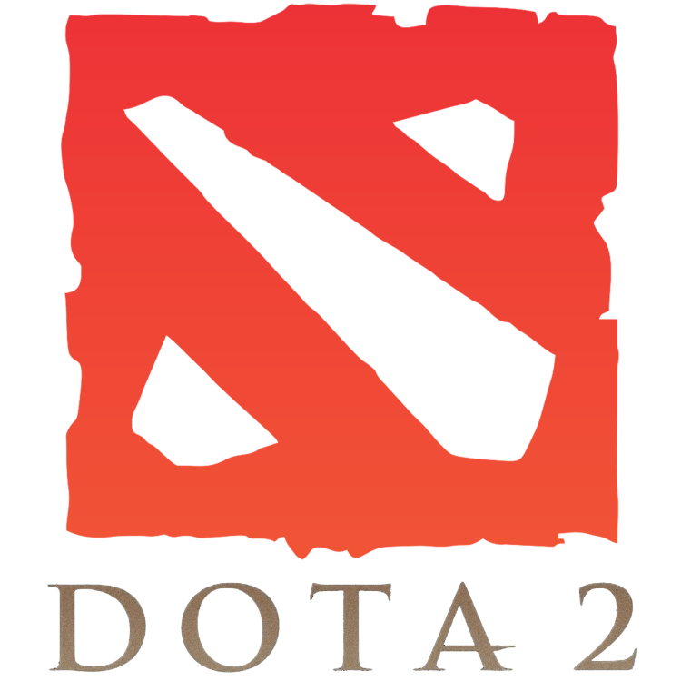

| Dota 2 |
CS:GO |
LOL |
|  |
 |
 |
| Dota 2 — многопользовательская командная компьютерная игра в жанре MOBA, разработанная и изданная корпорацией Valve. Игра является продолжением DotA — пользовательской карты-модификации для игры Warcraft III: Reign of Chaos и дополнения к ней Warcraft III: The Frozen Throne. Игра изображает сражение на карте особого вида; в каждом матче участвуют две команды по пять игроков, управляющих разными «героями» — персонажами с различными наборами способностей и характеристиками. Для победы в матче команда должна уничтожить особый объект — «крепость», принадлежащий вражеской стороне, и защитить от уничтожения собственную «крепость». |
Counter-Strike: Global Offensive (CS:GO; с англ. — «Контрудар: глобальное наступление») — многопользовательская компьютерная игра, разработанная компаниями Valve и Hidden Path Entertainment.Как и в остальных играх серии, в Counter-Strike: Global Offensive игроки делятся на две команды: террористов и подразделений специального назначения, после чего сражаются друг с другом несколько раундов, по результатам которых определяется команда-победитель. Игроку доступны разные режимы игры, меняющие условия поединка между командами, а также игра с ботами |
League of Legends (в переводе с англ. — «Лига легенд»), сокращённо LoL — многопользовательская компьютерная игра в жанре MOBA, разработанная и выпущенная американской компанией Riot Games в 2009 году для платформ Microsoft Windows и macOS. Игра была разработана по образу и подобию DotA — пользовательской карты (модификации) для Warcraft III. |